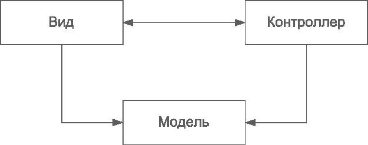

MVC - Model View Controller (Модель-Вид-Контроллер)

Паттерн проектирования MVC - Model View Controller
Описание MVC - Model View Controller
Этот шаблон разделяет работу веб-приложения на три отдельные функциональные роли: модель данных (model), пользовательский интерфейс (view) и управляющую логику (controller). Таким образом, изменения, вносимые в один из компонентов, оказывают минимально возможное воздействие на другие компоненты.
В данном паттерне модель не зависит от представления или управляющей логики, что делает возможным проектирование модели как независимого компонента и, например, создавать несколько представлений для одной модели.
Впервые этот шаблон был применён в фреймворке, разрабатываемом для языка Smalltalk в конце 1970-х годов. С этого момента он играет основополагающую роль в большинстве фреймфорков с пользовательским интерфейсом. Он в корне изменил взгляд на проектирование приложений.
Большинство фреймворков для веб-программирования сейчас в основе своей содержат именно MVC. К наиболее удачным примерам применения этого паттерна для языка PHP можно отнести Zend Framework и cakePHP
Примеры реализации
// MVC Pattern in JavaScript
// Model
class UserModel {
constructor() {
this.users = [];
}
addUser(user) {
this.users.push(user);
}
getUsers() {
return this.users;
}
}
// View
class UserView {
constructor() {
this.container = document.getElementById('user-list');
}
render(users) {
this.container.innerHTML = users.map(user =>
`<div>${user.name} - ${user.email}</div>`
).join('');
}
}
// Controller
class UserController {
constructor(model, view) {
this.model = model;
this.view = view;
}
addUser(name, email) {
const user = { name, email };
this.model.addUser(user);
this.view.render(this.model.getUsers());
}
}
// Usage
const model = new UserModel();
const view = new UserView();
const controller = new UserController(model, view);
controller.addUser('John Doe', 'john@example.com');// MVC Pattern in C++
#include <iostream>
#include <vector>
#include <string>
// Model
class UserModel {
private:
std::vector<std::pair<std::string, std::string>> users;
public:
void addUser(const std::string& name, const std::string& email) {
users.emplace_back(name, email);
}
const std::vector<std::pair<std::string, std::string>>& getUsers() const {
return users;
}
};
// View
class UserView {
public:
void render(const std::vector<std::pair<std::string, std::string>>& users) {
std::cout << "Users:" << std::endl;
for (const auto& user : users) {
std::cout << user.first << " - " << user.second << std::endl;
}
}
};
// Controller
class UserController {
private:
UserModel* model;
UserView* view;
public:
UserController(UserModel* m, UserView* v) : model(m), view(v) {}
void addUser(const std::string& name, const std::string& email) {
model->addUser(name, email);
view->render(model->getUsers());
}
};// MVC Pattern in Go
package main
import "fmt"
// Model
type User struct {
Name string
Email string
}
type UserModel struct {
users []User
}
func (m *UserModel) AddUser(user User) {
m.users = append(m.users, user)
}
func (m *UserModel) GetUsers() []User {
return m.users
}
// View
type UserView struct{}
func (v *UserView) Render(users []User) {
fmt.Println("Users:")
for _, user := range users {
fmt.Printf("%s - %s\n", user.Name, user.Email)
}
}
// Controller
type UserController struct {
model *UserModel
view *UserView
}
func (c *UserController) AddUser(name, email string) {
user := User{Name: name, Email: email}
c.model.AddUser(user)
c.view.Render(c.model.GetUsers())
}
// Usage
func main() {
model := &UserModel{}
view := &UserView{}
controller := &UserController{model: model, view: view}
controller.AddUser("John Doe", "john@example.com")
}# MVC Pattern in Python
class UserModel:
def __init__(self):
self.users = []
def add_user(self, name, email):
self.users.append({'name': name, 'email': email})
def get_users(self):
return self.users
class UserView:
def render(self, users):
print("Users:")
for user in users:
print(f"{user['name']} - {user['email']}")
class UserController:
def __init__(self, model, view):
self.model = model
self.view = view
def add_user(self, name, email):
self.model.add_user(name, email)
self.view.render(self.model.get_users())
# Usage
if __name__ == "__main__":
model = UserModel()
view = UserView()
controller = UserController(model, view)
controller.add_user("John Doe", "john@example.com")<?php
// MVC Pattern in PHP
class UserModel {
private $users = [];
public function addUser($name, $email) {
$this->users[] = ['name' => $name, 'email' => $email];
}
public function getUsers() {
return $this->users;
}
}
class UserView {
public function render($users) {
echo "Users:\n";
foreach ($users as $user) {
echo $user['name'] . " - " . $user['email'] . "\n";
}
}
}
class UserController {
private $model;
private $view;
public function __construct($model, $view) {
$this->model = $model;
$this->view = $view;
}
public function addUser($name, $email) {
$this->model->addUser($name, $email);
$this->view->render($this->model->getUsers());
}
}
// Usage
$model = new UserModel();
$view = new UserView();
$controller = new UserController($model, $view);
$controller->addUser("John Doe", "john@example.com");
?>Использована иллюстрация с сайта Мартина Фаулера.